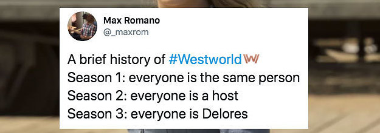

Present:
Absents:
Agenda:
Unfinished Discussion from the Last Meeting:
New Discussions:
Comments:
To respond the following meme, Hale made an attempt to persuade everyone that she is not delores.
End Note
For whose who do not know Westworld, Westworld is a TV show by HBO, adapted from the 1973 film Westworld, or at least the first season is. It currently has three seaons.